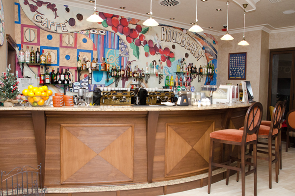
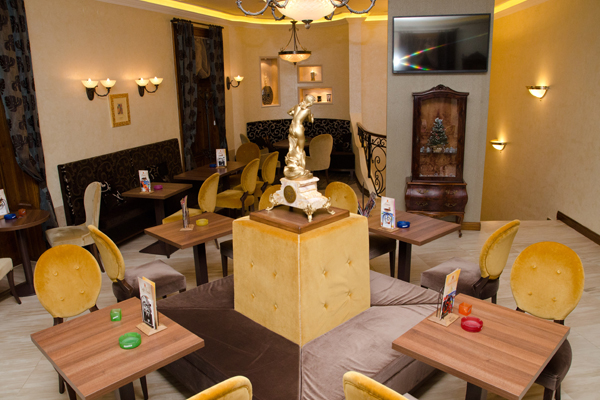

Firma ECOMEX nastala je 1993 godine i nalazi se u privatnom vlasništvu. ECOMEX je pionir u lansiranju i razvijanju tržišta espresso kafe. Posle više od 20 godina uspešnog poslovanja pored veoma jake konkurencije ECOMEX sa brendom HAUSBRANDT drži lidersku poziciju.

ECOMEX proširuje svoj portfolio 2000-te godine uvozom alkoholnih pića. Potpisan je ugovor o ekskluzivnom uvozu i distribuciji STOCK alkoholnog programa. Praćenjem trendova konzumacije alkoholnih pića i istraživanjem potencijala tržišta, doneta je odluka da se napravi novi gorki biljni liker. Ecomex je sopstvene ideje, dugogodišnje znanje, iskustvo i strast za dobrim pićem u saradnji sa kompanijom STROH iz Klagenfurta i jednom renomiranom marketinškom agencijom pretvorio u jedinstveni gorki biljni liker i stvorio sopstveni brand – Cepelin. U asortimanu Ecomexa nalazi se i autentičan premijum rum STROH sa liderskom pozicijom kada su u pitanju jačina, snaga i aroma.

U samom srcu Subotice kod Plave fontane, nalazi se spomenik kulture Lončarević kuća. Upravo u toj kući smešten je prvi Hausbrandt kafe u vlasništvu firme ECOMEX. Čim se kroči u lokal oseti se atmosfera dobrodošlice zahvaljujući pastelnim bojama i velikom koloritnom crtežu preko celog zida koji priča priču o kafi. Uradjen je u stilu Gustava Klimta i prosto utiče na emocije i želju da uživate u kafi. Gornji nivo je opet priča za sebe, sa kibic fensterom, terasicom, kombinacijom drveta i kovanog gvoždja ima posebnu draž i luksuznost. Spoljašnost zgrade zadržala je duh starog grada, a unutrašnjost predstavlja kombinaciju modernog i tradicije. Ovo su vrednosti na kojima se temelji i vizija kompanije Hausbrandt. Dakle, izbor ovog prostora nije slučajan, nego se savršeno uklapa u imidž koji neguje Hausbrandt.